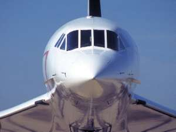

Le Concorde 001 est le tout premier Concorde à avoir volé.
La conception et l'assemblage furent laborieux, avec de nombreux problèmes et retards.
Le 02/mars/1969, après plusieurs jours de brouillard sur Toulouse, le premier vol
du F-WTSS est enfin possible.
André Turcat réalise ce vol historique.
Michel Rétif (mécanicien navigant),
Henri Perrier (ingénieur des vols), Jacques Guignard (copilote) et André
Turcat (pilote).
Sa définition est très éloignée des avions de série ;
il est moins puissant, moins long, moins lourd, avec une visière de nez très différente.

Visière du 001 (voir aussi
ci-dessous)
Avion de série
Le cockpit est lui aussi très différent d'un avion série.
proto 001 (noter la visière)
Avion de série
proto 001 (noter la longueur du cone
arrière)
Avion de série
La cabine du 001 est remplie d'appareillages de mesure
Le prototype 001 volera avec à son bord Valérie Giscard d'Estain (1969), Georges Pompidou
(1971),
et poursuivra l'éclipse de soleil Africaine de 1973. Les derniers vols auront lieux fin 1973.